Informs the build-vs-buy decision for running large open models locally: whether an 80%+ size reduction from dynamic quantization actually preserves most of the model's accuracy, where it silently breaks on newer architectures, and wheth...
The panel frames quantization as a layer-aware, format-specific process rather than uniform rounding, though the failure case on newer architectures suggests the technique is not yet fully general (ours).
“you can actually quantize it and shrink it to 250GB. Um so you can make it 86% smaller.”
said at 03:12“still recover 76% of all accuracy. Um so you so the trick for quantization is if you quantize the correct layers you will not make the model you know literally useless.”
said at 03:43“the biggest moment was Deep Seek R1. Definitely when it got released, it was quite dramatic for the world because we finally have some sort of like reasoning model that worked very well.”
said at 04:47“In in the case of FP4, you choose 16 elements and you can share one scaling fac one one extra um FP8 number between these 16 elements.”
said at 16:53“for medium and large models PDQ works out of the box very easy relatively super easy to do.”
said at 30:51“the bigger model quantized to 4bit is actually much better um than a 35 billion 16 bit.”
said at 22:35“if you quantize the linear attention layers okay it looks like it's doing good but then when you do long context benchmarks you know when you actually use the model in real production it becomes gibberish.”
said at 36:33“I see intelligence going to phones thanks to the quants and everything.”
said at 39:38Every compression claim on this panel comes from teams selling compression tooling (Unsloth, NVIDIA's model optimizer, Hugging Face, Ollama), so the accuracy-recovery numbers are best treated as vendor-reported until checked against an independent benchmark (ours).
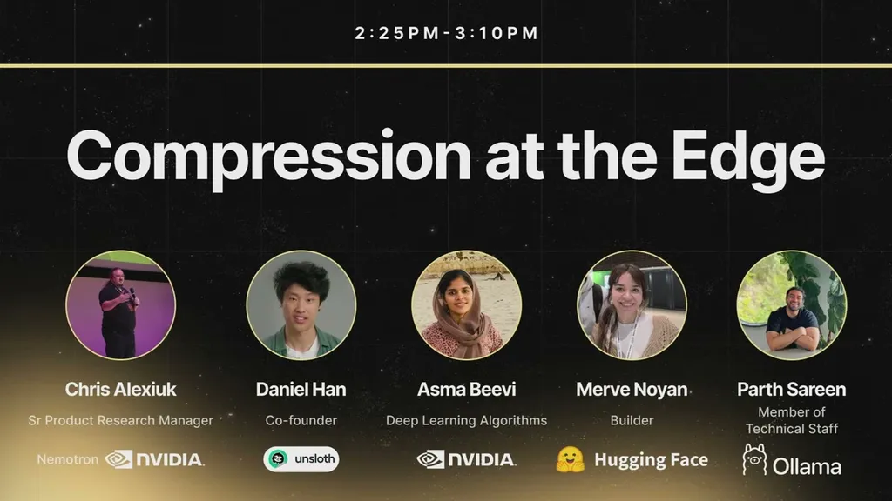
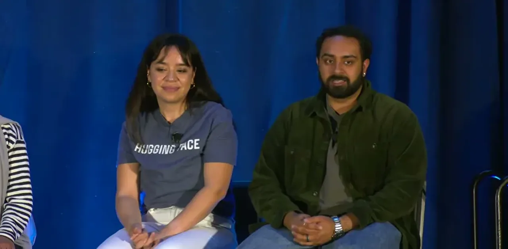
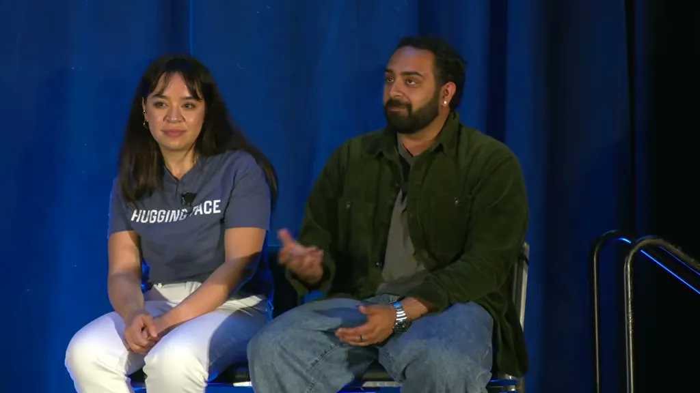
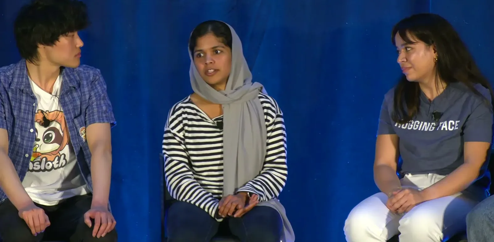
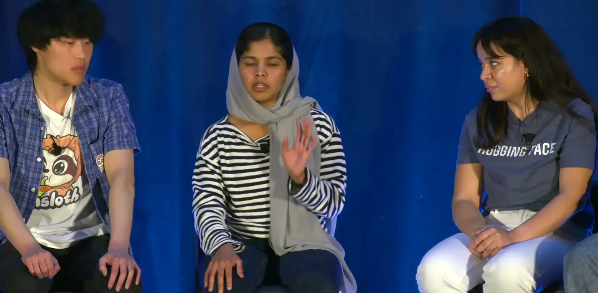
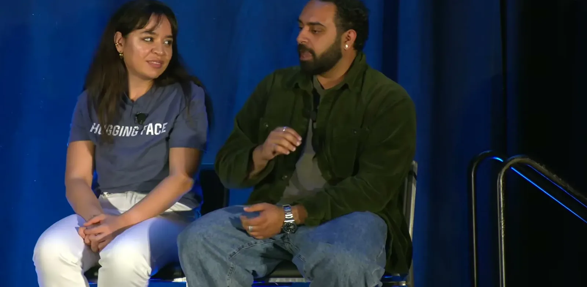
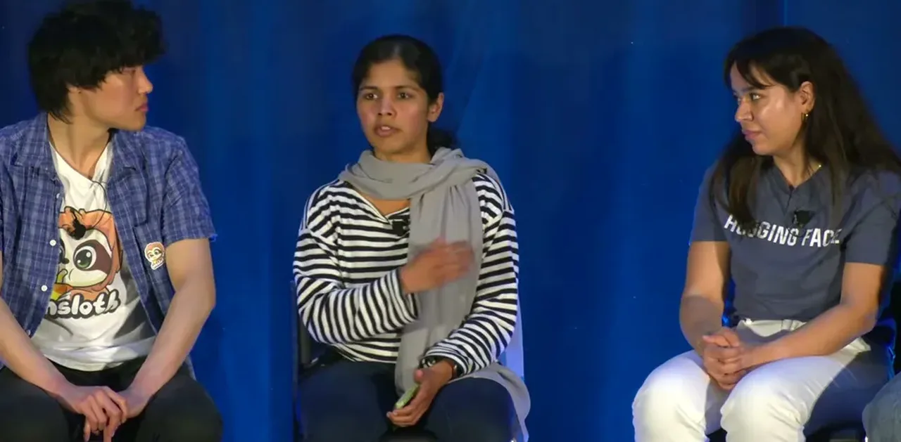
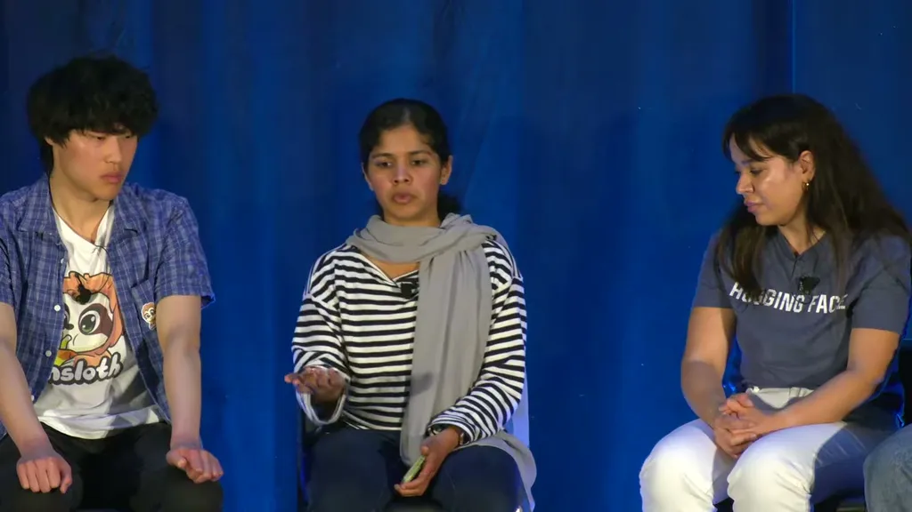
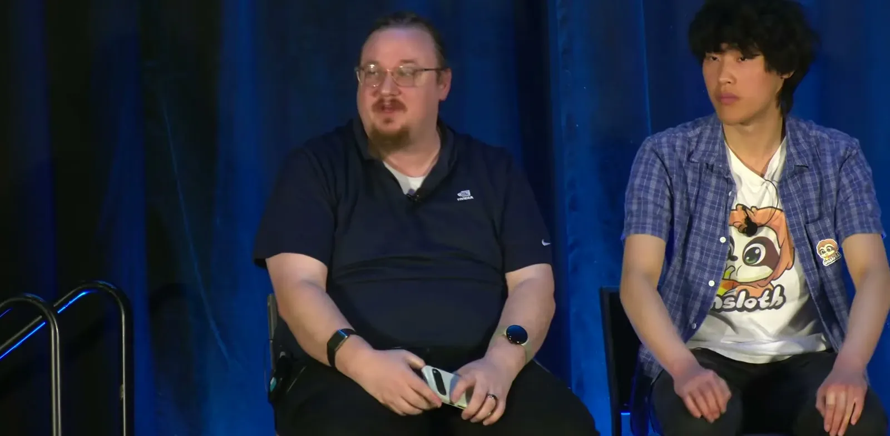
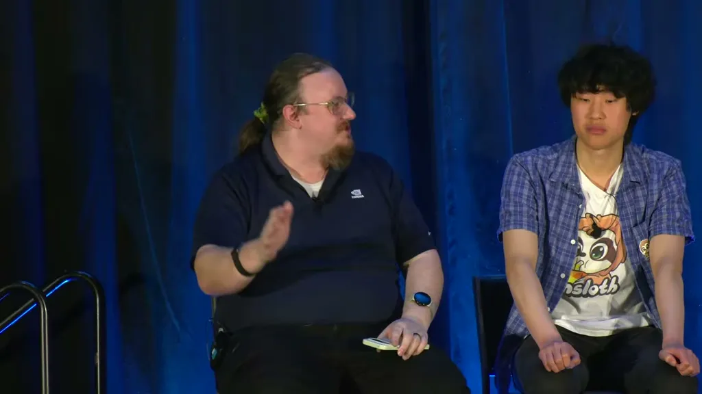
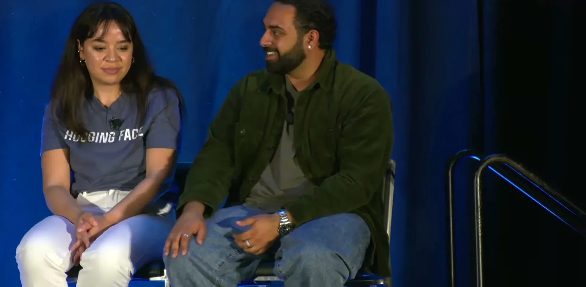
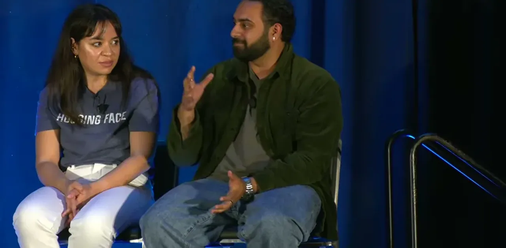
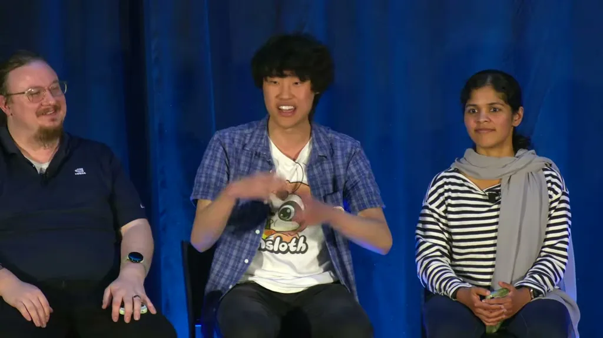
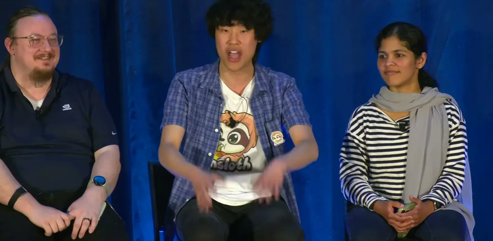
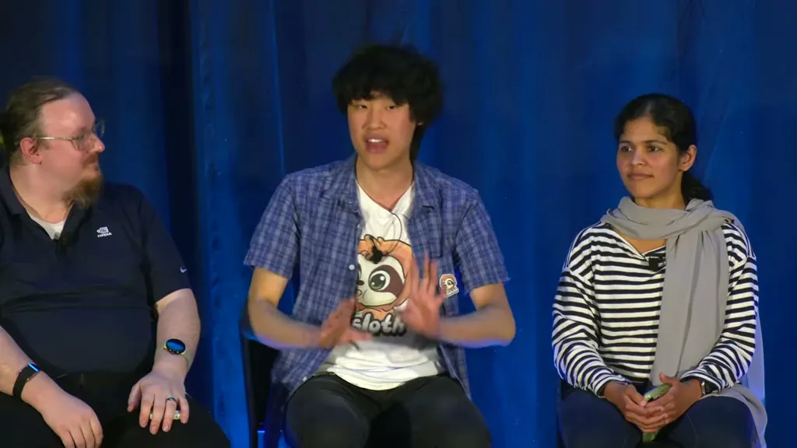
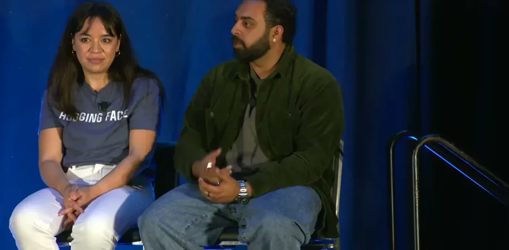
| Stance | Claim | t |
|---|---|---|
| asserts | Daniel Han says GLM 5.2 can be quantized from 1.5 terabytes down to 250GB, an 86% size reduction. | 03:12 |
| asserts | Selective, layer-aware quantization recovered 76% of overall accuracy even after cutting model size by 86%. | 03:43 |
| asserts | Han identifies Deep Seek R1's release as the moment that made local quantization urgent, since the reasoning model was too large to run locally otherwise. | 04:47 |
| asserts | NVFP4 is a microscaled 4-bit format where every 16 elements share one 8-bit scaling factor. | 16:53 |
| asserts | At matched disk size, a bigger model quantized to 4-bit outperformed a smaller 16-bit model in the comparison cited on the panel. | 22:35 |
| warns | Quantizing linear attention layers can pass ordinary benchmarks yet produce gibberish once tested on real long-context production use. | 36:33 |
| recommends | NVIDIA's model optimizer team says post-training quantization works out of the box for medium and large (20B+) models without special recovery techniques. | 30:51 |
| predicts | Marv (Hugging Face) predicts intelligence moving onto phones as the next frontier for compression. | 39:38 |
Machine-readable copy embedded in this page (script#ontology) and in the corpus ontology.